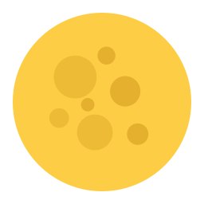

App icon
One mark, five formats, three flavors. The mark is never hue-shifted.
SquircleiOS, macOS, Android, web
Banner 16:9Android TV
PosterRoku channel, square
Top shelfApple TV, wide hero
Splashcentered wordmark on charcoal
Productioncharcoal surface, brand mark
Nightlytrue black, star field, moon, saucer. TestFlight and internal tracks
Devblueprint blue + grid, wordmark forced pure white
01
SquircleiOS · macOS · Android · web · 1024×1024 source
app-icon-source.png
production
put.io
#1a1a1a · #fff · #FDCE45
nightly · staging
put.io · nightly
#050505 · #fff · #FDCE45
dev · local
put.io · dev
blueprint + grid
02
Android TV bannerLauncher banner · 320×180 (16:9) · centered wordmark
required by Android TV guidelines
production
put.io · banner
white + yellow on #333



nightly · staging
put.io · nightly banner
retro logo on night sky
dev
put.io · dev banner
white on blueprint
03
Roku channel posterChannel grid tile · square · centered wordmark
channel poster
production
put.io · channel
centered wordmark
nightly · staging
put.io · nightly channel
retro logo on night sky
dev
put.io · dev channel
white on blueprint
Wordmark only, centred on charcoal. No mark+wordmark stack.
Same composition as Android TV and Apple TV.
04
Apple TV top shelfFeatured slot · 1920×720 (2.66:1) · wordmark hero
tvOS HIG · top-shelf slot
production
put.io · top shelf
wordmark on #333
nightly · staging
put.io · nightly top shelf
retro logo on night sky
dev
put.io · dev top shelf
white on blueprint
Wordmark only. Read at couch distance, so it matches Android TV and Roku exactly.
05
Splash & launchiOS launch screen · 240pt wordmark · centered on charcoal
the launch screen
production
put.io · launch
brand charcoal #333
nightly · staging
put.io · nightly launch
retro logo on night sky
dev
put.io · dev launch
white on blueprint
240pt logo, centred on charcoal RGB 51/51/51. No P-mark, no stack, no gradient. One image serves every splash slot.
Nightly renders logo-retro-dark.svg exactly as production: white glyphs, #FDCE45 drop-shadow. The night sky carries the flavor, not the mark.
Never invert, tint or flatten the wordmark on nightly. Dev inverts to flat white only because a two-colour mark vanishes into blueprint blue. Black has no such problem.
Master
1024 × 1024
app-icon-source.png
Wordmark
logo-retro-dark.svg
white + #FDCE45
Build surfaces
#050505 + sky · blue + grid
nightly · dev
TV surface
#333 charcoal
brand charcoal
Flavors
Production · Nightly · Dev
TestFlight + staging ship nightly
Production: App Store, Play, Roku and tvOS public channels.
Nightly: TestFlight, Play internal and closed tracks, staging TV sideloads, anything on the staging API.
Dev: local and CI only, never distributed.
Bundle IDs differ per flavor, so all three sit on one device. The icon is the only way to tell them apart on a home screen.
Stars: three sizes, three opacities, weighted faint. Scattered, never gridded. Clear of both objects.
Moon: top-left, full disc #FDCE45, craters #EDBB35 and #E4B02D.
Saucer: top-right, hull no wider than the moon. White hull, pale-gold dome, three yellow underlights. No tractor beam, it competed with the mark.
Assets: nightly-starfield.png (256×256, tiled at 150px), nightly-fullmoon.png, nightly-saucer.png. Static. No animation, no glow.